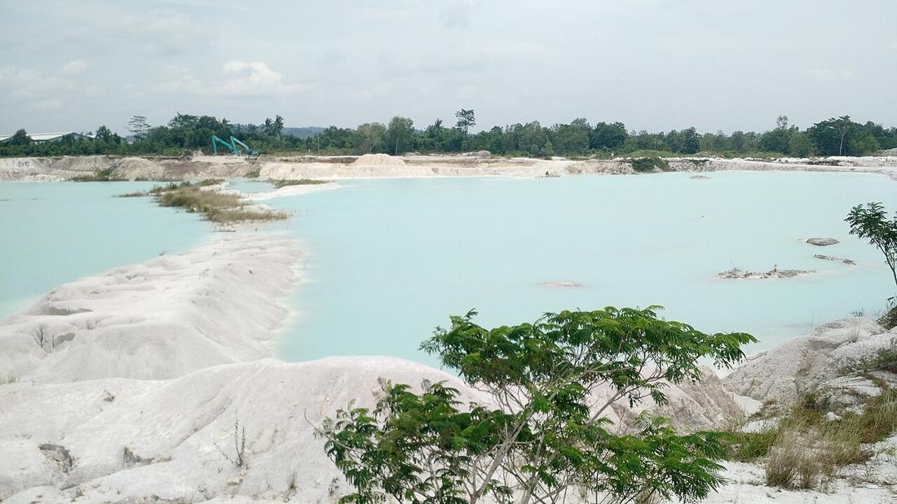

Danau Kaolin: Biru Muda di Bekas Galian Tambang
Danau berwarna biru muda di Desa Air Raya yang terbentuk dari bekas galian tambang kaolin, cantik dipandang tapi tidak untuk berenang.

Sekilas, fotonya mirip kawah di dataran tinggi: air biru muda dikelilingi bukit-bukit putih. Padahal Danau Kaolin di Desa Air Raya, Tanjungpandan, sama sekali bukan kawah gunung. Danau ini adalah bekas galian tambang yang kemudian terisi air.
Bagaimana danau ini terbentuk?
Kaolin adalah mineral berwarna putih yang teksturnya mirip tanah liat. Bahan ini dipakai di berbagai industri, misalnya keramik. Menurut laman pariwisata resmi Indonesia (indonesia.travel), lubang-lubang bekas penambangan kaolin di sini lama-lama terisi air hujan. Air yang bercampur mineral kaolin itulah yang menghasilkan warna biru muda hingga biru kehijauan, kontras dengan tanah putih di sekelilingnya.
Seorang pemandu wisata yang diwawancarai Kompas pada 2019 bercerita bahwa warna air bisa terlihat berbeda tergantung cuaca: biru muda saat cerah, lebih hijau saat mendung. Ia juga menjelaskan bahwa di Bangka Belitung banyak bekas galian tambang. Kalau dilihat dari pesawat, galian yang gelap umumnya bekas tambang timah, sedangkan yang putih bekas tambang kaolin.
Cantik, tapi jangan nyebur
Ini bagian paling penting. Pemandu yang sama mengatakan pengunjung tidak dianjurkan berenang karena airnya berbahaya, dan papan larangan berenang sudah dipasang. Jadi nikmati danaunya dari tepi saja. Tanah kaolin di pinggir danau juga bisa licin, terutama setelah hujan, jadi pakai alas kaki yang nyaman dan jangan terlalu dekat ke bibir galian.
Pengingat tentang bekas tambang
Danau Kaolin cantik di foto, tapi ia juga pengingat bahwa Belitung punya sejarah panjang pertambangan. Lahan yang dulu digali tidak selalu bisa dikembalikan seperti semula. Menurut pemandu tadi, lubang yang sudah terlalu besar dan terus terisi air hujan akhirnya tidak jadi direklamasi. Datang ke sini bisa jadi kesempatan untuk ngobrol soal itu: bagaimana bentang alam berubah karena tambang, dan kenapa menjaga lingkungan Belitung itu penting.
Tips singkat
- Lokasinya tidak jauh dari pusat kota Tanjungpandan dan bandara H.A.S. Hanandjoeddin. Kompas menyebut sekitar 20 menit dari bandara.
- Datang saat langit cerah kalau ingin warna biru paling jelas.
- Di sekitar danau ada pedagang batu satam. Kalau mau beli, tanyakan asal-usul batunya dengan sopan.
- Bawa pulang sampahmu. Area putih seperti ini membuat sampah sekecil apa pun langsung kelihatan.
Sumber: lihat daftar sumber di bawah. Tulisan ini disusun ulang oleh tim iTAP Belitung.
Sumber
- travel.kompas.com/copy/2019/11/23/100000127/bukan-kawah-putih-bandung-ini-danau-kaolin-di-
- www.indonesia.travel/id/en/destination/sumatra/bangka-belitung-islands/danau-kaolin
- www.openstreetmap.org/node/6634530285
Ditulis ulang oleh tim iTAP Belitung dari sumber di atas. Ada yang keliru? Kabari kami lewat Kirim kabar atau email putraanandateguh@gmail.com.